Willkommen bei BFL Burow – Werkstatt, Landtechnik & Gartengeräte. Mit jahrzehntelanger Erfahrung und frischem Schwung durch Werkstattleiter Markus Klein bieten wir Ihnen ehrlichen Kfz- & Landtechnik-Service aller Marken, Bagger- & Radladerarbeiten, Schleifservice für Messer & Scheren sowie Fachberatung für Qualitäts-Gartengeräte von Kress, Solo und Herkules.
Schnelle Hilfe von Markus & Team
Starke Technik für Forst, Baustelle und Garten – persönlich beraten, einsatzbereit übergeben und direkt in unserer Fachwerkstatt betreut.
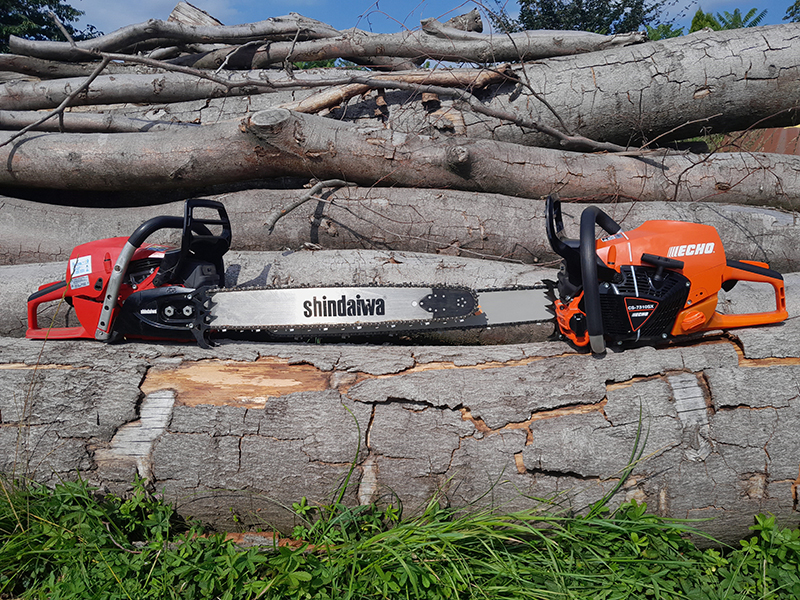
Forst & HolzzeitDie Holzzeit kann kommen, wir helfen aus. Ob für Brennholz oder anspruchsvollen Forsteinsatz – bei uns erhalten Sie robuste Profi-Kettensägen (u. a. Shindaiwa, ECHO & Solo) inkl. Einweisung, Zubehör und eigenem Kettenschärf-Service.
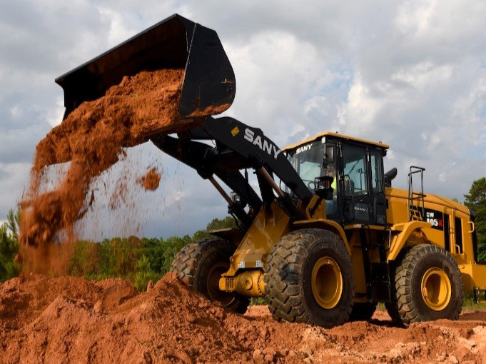
SANY Neuheit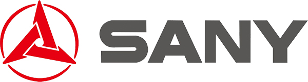
Der neue SANY Radlader SW 405! Alle Infos, Daten und persönliche Beratung erhalten Sie direkt bei uns. Auf alle SANY-Baumaschinen gibt es 5 Jahre oder 10.000 Std. Garantie.
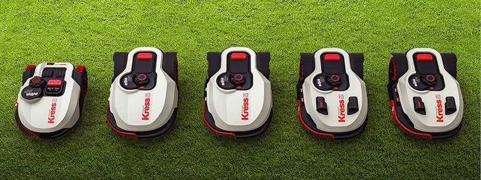
Rasen-RobotikStörungsfreies Mähen durch patentierte Innovationen! Wir beraten Sie gerne zu den passenden Kress Mission & RTK-Modellen für Ihren Garten und sorgen für einen unkomplizierten Aufbau vor Ort.
Als gelernter Kfz-Mechaniker legt Markus Klein größten Wert auf handwerkliche Präzision, moderne Fehlerdiagnose und transparente Absprachen. Wir warten und reparieren Pkw, Transporter und Anhänger aller Marken nach strengen Herstellervorgaben.
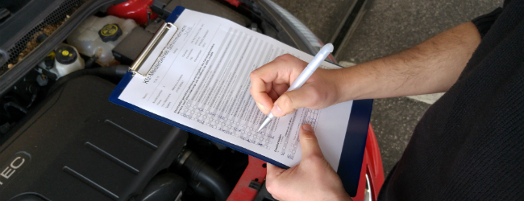
Kleine und große Inspektionen exakt nach Herstellervorgaben – inklusive flexibler Wartungsintervalle sowie Bremsen- und Fahrwerksservice in Erstausrüsterqualität.
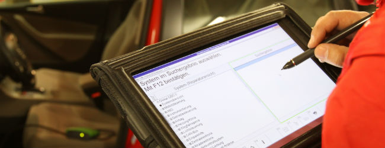
Detailliertes Auslesen des Fehlerspeichers mit modernsten Diagnosesystemen und Prüfsoftware für alle Fahrzeugfabrikate – für eine schnelle, gezielte Instandsetzung.
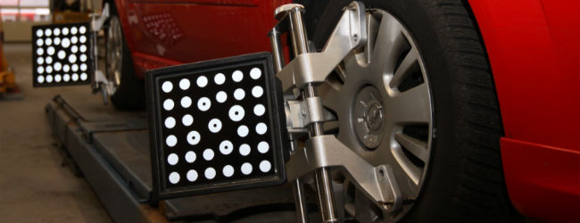
Präzise Vermessung und Feinjustierung der Achsgeometrie nach Herstellervorgaben. Senkt Kraftstoffverbrauch & Reifenverschleiß und sorgt für perfekten Geradeauslauf.
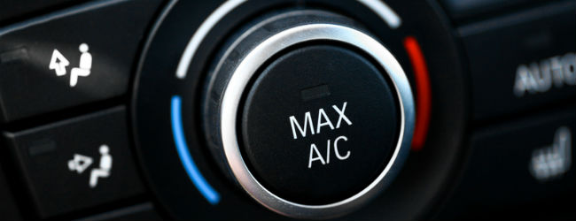
Jährliche Inspektion, Dichtheitsprüfung, Desinfektion gegen Bakterien & Gerüche sowie Kältemittel-Befüllung (R134a & R1234yf) für langfristig gutes Klima im Auto.
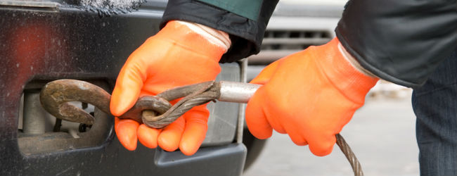
Wir schleppen Ihr Fahrzeug vom Unfallort ab, erstellen eine detaillierte Schadensanalyse inkl. Versicherungsdokumentation und stellen Ihnen ein Ersatzfahrzeug.
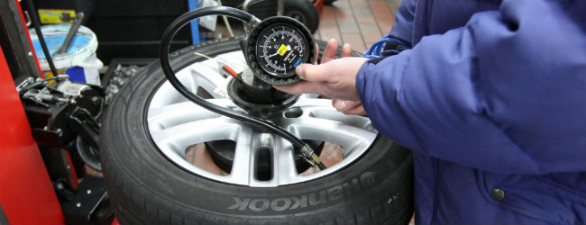
Kompetente Reifenberatung, Wechseln, Wuchten, Waschen & Einlagern, fachgerechte Vulkanisation, Neureifen zu Bestpreisen & Altreifen-Entsorgung.
Wir reparieren Anhänger aller Fabrikate: Bremsen, Leuchten & Scheinwerfer, Kotflügel, Reifen und Rahmen. Inklusive gründlicher Vorabprüfung für die Hauptuntersuchung, detailliertem Kostenvoranschlag sowie normgerechten Um- und Anbauten nach Ihren Wünschen.
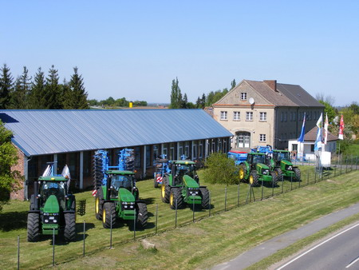
Wir führen Wartungen und Kundendienste an Ihrem John Deere Schlepper durch und kümmern uns selbstverständlich auch um Reparaturen aller anderen Fabrikate. Durch unser großes Waren- und Ersatzteillager stehen viele Teile sofort bereit – damit Ihre Arbeit ohne lange Standzeiten weitergeht.
Während der Erntezeit sind wir telefonisch rund um die Uhr für Sie erreichbar.
Durch unsere John Deere Kooperation geben wir Ersatzteil-Bestellungen täglich bis 20:00 Uhr auf.
Ob Baggerarbeiten mit erfahrenem Fahrer, kurzfristige Baumaschinenvermietung für Selbermacher oder der Kauf neuer SANY Baumaschinen – wir sind Ihr Ansprechpartner in Burow!
Keine Zeit oder Erfahrung, selbst auf dem Bagger zu sitzen? Wir erledigen Ihre Erdarbeiten sauber, schnell und termintreu:
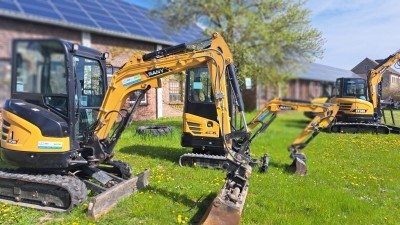
Mietpark BurowMinibagger von 1,8 t und 2,6 t können Sie kurzfristig nach Absprache mieten – weitere Baumaschinengrößen auf Anfrage mit Vorlaufzeit!
Sicherheit, Komfort und Ergonomie sind die Attribute, die das Arbeiten mit SANY am besten beschreiben. Die umfangreiche SANY Produktrange – darunter der neue SANY Radlader SW 405 sowie kompakte Mini- und Mobilbagger – ist mit modernster Technik ausgestattet und überzeugt durch höchste Wirtschaftlichkeit.
Verkauf, Einweisung, Zubehör und werkstatteigener Kundendienst: Wir setzen auf bewährte Spitzenmarken statt Wegwerf-Baumarktware.
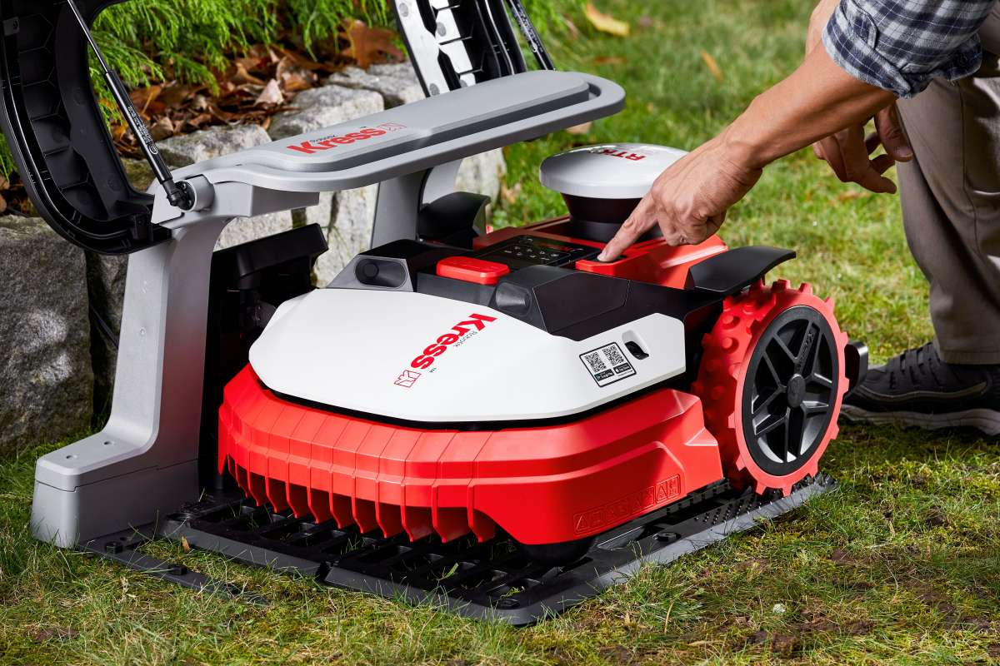
Kress Robotik & AkkuPionier der kabelungebundenen RTK-Mähroboter (ohne Begrenzungsdraht!) sowie extrem langlebige 60V-Akkusysteme für anspruchsvolle Privatgärten und Großflächen.
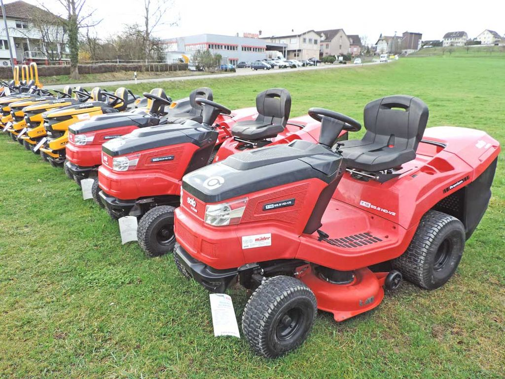
Solo by AL-KOTraditionelle deutsche Ingenieurskunst für Garten, Forst und Landwirtschaft. Bekannt für langlebige Benzin- & Akku-Kettensägen, Rasentraktoren und Profi-Spritzen.
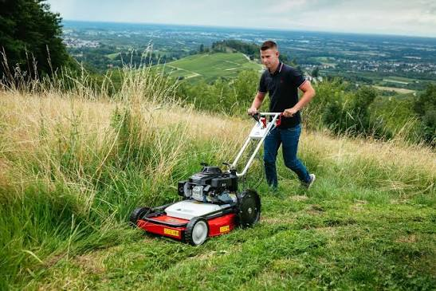
Herkules MotorgeräteSpezialist für anspruchsvolles Gelände, Gestrüpp, Hanglagen und Großflächen. Perfekt für Landwirte, Kommunen und Hausbesitzer mit großen Grundstücken.
Stumpfe Klingen reißen statt zu schneiden und beschädigen Pflanzen oder Materialien. Bringen Sie Ihr Schneidwerkzeug einfach bei uns in Burow vorbei:
Ein geplatzter Schlauch legt Traktor, Bagger oder Ladekran lahm. Wir verpressen Hydraulikschläuche schnell und passgenau direkt in unserer Werkstatt:
BFL Burow · Seltzer Straße 4, 17089 Burow · Zentral an der B96
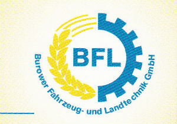